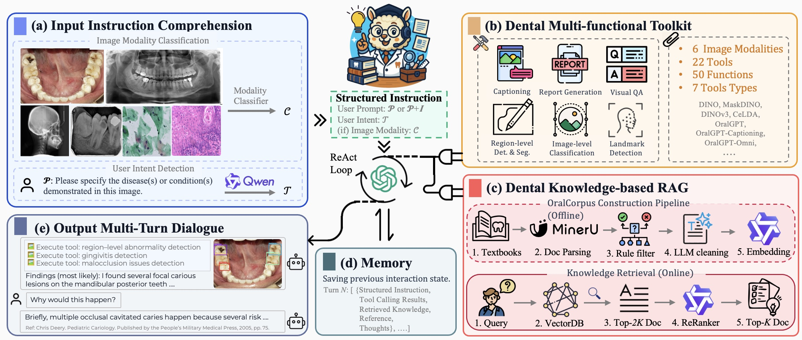

|
I'm pursuing my Ph.D. degree at The University of Hong Kong, Faculty of Dentistry (Ranking 2nd in the world), specializing in Medical AI and MLLM, supervised by Prof. Kuo Feng Hung and Prof. James Kit Hon Tsoi. I lead the OralGPT-Family series of work (OralGPT, OralGPT-Omni, OralGPT-Plus, and OralAgent). I am currently a visiting student at Ant Group (Ant Star). Previously, I was a visiting student at Shanghai AI Lab (2026.01–2026.05), and worked as a Computer Vision Engineer at Baidu VIS from 2022.07 to 2024.08. I received my M.S. degree from Huazhong University of Science and Technology (HUST, 2022), and B.S. degree from China University of Mining and Technology (CUMT, 2020). My research interests span MLLM, Agent, and AI4Science. |

|
|
|
See full list at Google Scholar. (* indicates equal contribution, # indicates corresponding author. The leading papers are highlighted.) |
|
 |
Jing Hao, Siyuan Dai, Yongxin Zhang, ..., Linlin Shen, Junjun He, Kuo Feng Hung [paper] [code] | 
Under Review We present OralAgent, the first dental-specialized AI agent that unifies multimodal reasoning, tool-based decision-making, and knowledge-grounded retrieval within an end-to-end automated framework. |

|
Jing Hao, Yuci Liang, Lizhuo Lin, ..., Linlin Shen, Kuo Feng Hung [paper] [code] | 
CVPR, 2026 (CCF-A) We present OralGPT-Omni, the first dental-specialized MLLM designed for comprehensive and trustworthy analysis across diverse dental imaging modalities and clinical tasks. We also introduce MMOral-Uni, the first unified multimodal benchmark for dental image analysis. |

|
Yuxuan Fan*, Jing Hao*, Hong Chen, Jiahao Bao, ..., Hao Tang [paper] [code] |
CVPR, 2026 (CCF-A) We present OralGPT-Plus, an agentic vision–language model designed to perform iterative and symmetry-aware diagnostic reasoning for panoramic dental radiograph analysis. |

|
Jing Hao, Yuxuan Fan, Yanpeng Sun, ..., Hao Tang, Kuo Feng Hung [paper] [Project Page] [code] |
NeurIPS, 2025 (CCF-A) We introduce MMOral, the first large-scale multimodal instruction dataset and benchmark tailored for panoramic X-ray interpretation. We also propose OralGPT, a multimodal vision-language model for panoramic X-ray analysis. |

|
Jing Hao, ..., Michael M. Bornstein, James Kit Hon Tsoi, Kuo Feng Hung [paper] npj Digital Medicine, 2025 (JCR Q1, IF=15.2) Open-source oral-maxillofacial imaging datasets were identified through electronic databases and dataset platforms. 105 datasets with 437538 images and 100 intraoral videos from patients across twenty-one countries were included. |

|
Jing Hao, Yonghui Zhu, Lei He, Moyun Liu, Kuo Feng Hung [paper] [dataset] [code] | 
IEEE Transactions on Multimedia (TMM), 2025 (JCR Q1, IF=9.7) T-Mamba is the first work to introduce frequency-based features into vision mamba, its flexibility allows it to process both 2D and 3D tooth data without the need for separate modules. |

|
Jing Hao, Moyun Liu, Jinrong Yang, Kuo Feng Hung [paper] [dataset] [code] | 
IEEE Transactions on Multimedia (TMM), 2024 (JCR Q1, IF=9.7) The first to propose exploring to the solution of glass surface segmentation by fully harnessing the capabilities of existing VFMs. |

|
Jing Hao, Song Chen [paper] [code] | 
Neural Networks, 2024 (JCR Q1, IF=6.3) A strong framework for utilizing Multiple datasets to pretrain DETR-like detectors without the need for manual label spaces integration. |

|
Jing Hao, Moyun Liu, Lei He, Lei Yao, James Kit Hon Tsoi, Kuo Feng Hung [paper] [dataset] [code] | 
MICCAI 2024 Workshop We participated in the challenge of “MICCAI STS 2024: Panoramic X-ray Images”, and ranked 6th among all submitted teams. |

|
Jing Hao, Yuxiang Zhao, Song Chen, Yanpeng Sun, Qiang Chen, Jingdong Wang [paper] Arxiv. preprint We designed a FullAnno system, which is a data engine that can generate large-scale, high-quality, and fine-grained image caption datasets automatically. |

|
Jing Hao, Lun M Wong, Qi Yong H. Ai, ..., James Kit Hon Tsoi, Kuo Feng Hung # [paper] [code] |
Diagnostics, 2024 (JCR Q1, IF=3.0) This study proposed a novel semi-supervised transformer-based framework designed for automated tooth segmentation and identification on panoramic radiographs. |

|
YuwenZhai*, Jing Hao*, Liang Gao, Xinyu Li, Yiping Gao, Shumin Han [paper] ICLR Tiny Paper, 2023 A self-attention approximation without training parameters which captures global spatial features with linear complexity. |

|
Jing Hao, Jingming Xie, Jinyuan Zhang, Moyun Liu [paper] IEEE Sensors Letters, 2023 (JCR Q3, IF=2.2) A stronger stitching algorithm for fisheye images by combining the traditional image processing method with deep learning. |

|
Moyun Liu, Jingming Xie, Jing Hao, Yang Zhang, Xuzhan Chen, Youping Chen [paper] Computers in Industry, 2022 (JCR Q1, IF=8.2) A signs recognition framework based on convolutional neural networks (CNNs) for weld images. |
|